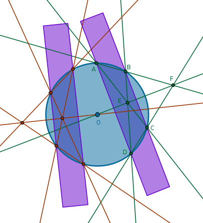

Ruler and Compass Constructions 02
This is a collection of problems that are small and basic but are fun to solve nonetheless. Albert Einstein used to say that one should make it as simple as possible but not simpler. If we equate the number of steps required to accomplish a given construction to simplicity then by finding the shortest construction we find the simplest one revealing certain fundamental properties of the two-dimensional space.
Starting with these constructions and onward we will be using \(g\) - a small and simple language I came up with during my geometry related work. Read more about it in \(g\) section.
Three-step Perpendicular to a Straight Line Through a Point On
It
A standard construction of a perpendicular to a straight line through a point on it is accomplished in four steps:
Objective:
accomplish the same task in three steps
Solution
These types of tasks have a peculiar accent - fundamentally a solution to the problem is already known. What we are asked to do is to simplify a sample solution. It follows then that unless authors have an evil intent there must be a theorem or a principle or a similar vehicle that allows the required simplification to be made. What construct could it be?
B3P31 or Thales' Theorem states that in a circle the angle in a semicircle is right. It follows then that to solve this problem we have to make the given point \(A\) be a vertex of a right angle of a right triangle whose hypotenuse is the diameter of an arbitrary circle.
If on a plane we pick an arbitrary point \(O\) that is not on the given straight line then the circle with a center at \(O\) and a radius \(OA\) will either touch the given straight line at \(A\), in which case the problem is solved, or it will intersect the given straight line at two points, \(A\) and \(B\).
Since two distinct points in a plane define a unique straight line then such a straight line, \(l\), may be constructed through the points \(B\) and \(O\). Since \(l\) passes through the circle's center, it plays the role of a diameter of that circle and a hypotenuse of the right triangle \(BAC\) from where it follows that the straight line \(CA\) is perpendicular to the given straight line:

which solves the problem in exactly three steps:
$$Cir(O \notin l, OA) \cap l = A, B$$ $$Ln(B, O) \cap C(O, OA) = B, C$$ $$Ln(C, A) \bot l$$
Three-step Perpendicular to a Straight Line Through a Point Not
On It
A standard construction of a perpendicular to a straigh line through a point not on it is accomplished in four steps:
Objective:
accomplish the same task in three steps
Solution
Will the right triangle in a circle from the previous problem work here also? No, the given point is not in a convenient location. What if we try Elimination approach by drawing several circles with centers in all the reasonably promising locations - below, above and on \(l\):
We observe that a circle \(q\) with a center on the given straight line looks promising. Since the portion of \(l\) trapped inside \(q\) plays a role of \(q\)'s diameter, it follows that every point on one half of \(q\)'s circumference has its, equidistant from \(l\), mirror image on the opposite half of \(q\)'s circumference.
It follows then that the mirror image of \(A\) with respect to \(l\) can be found by intersecting the second circle with the first one. The only requirement that we impose then on the second circle is that its center must be on the given straight line and must be distinct from the center of the first circle since the circumference of the second circle must pass through the given point:
$$Cir(O \in l, OA) \cap l = B, C$$ $$Cir(C, CA) \cap Cir(O, OA) = A, D$$ $$Ln(A, D) \bot l$$
Three-step Parallel to a Straight Line Through a Point
A standard construction of a parallel to a striaght line through a point is accomplished in four steps:
Objective:
accomplish the same task in three steps
Solution
Let us try the elimination approach. A circle with a center at the given point leads to a four-step construction. Other reasonable locations for a circle's center are above, on and below the given straight line. However, the circumference of any such circle must pass through the given point.
The given straight line will intersect any of these circumferences at two points which will be equally distanced from the centers of the respective circles. An imaginary vertical through the center of any such circle will cut the circumference in two symmetrical halves. Any point, \(A\) including, on one half of the circumference will have an equivalently positioned point on the other half of the circumference. To find that second point all we need to do is measure the distance \(BA\) and use it as a radius of a circle constructed with a center at \(C\) since such carrying of a distance is allowed by B1P2. The intersection point \(D\) will be located at the same distance above \(l\) as \(A\). \(Ln(A, D)\) solves the problem in three steps:
$$Cir(O \in l, OA) \cap l = B, C$$ $$Cir(C, BA) \cap Cir(O, OA) = D, E$$ $$Ln(A, D) \| l$$
Five-step Center of a Circle
A standard construction to find a center of a given circle \(q\) is accomplished in seven steps:
Objective:
accomplish the same task in five steps
Solution
Let us try the elimination approach. The standard \(7-\)step construction begins with a straight line that intersects the given circle at two points. What if instead of a striaght line we use a new circle that cuts the given one at two points. Where do we position the center of the new circle? Inside, outside or on the given circle.
Based on Euclid's B3P10, a circle does not cut a circle at more than two points, we choose the radius of the first new circle in such a way that it cuts the given circle at two points, \(O_2\) and \(O_3\). Since these points belong to two circles at the same time, they will be equally distanced from the corresponding centers - we know where is the first center, \(O_1\), while we need to find the other:
Construct the second circle with a center at \(O_2\) and a radius \(O_2O_1\). Then the straight line through \(B\) and \(C\) must pass through the sought-after center. Why?
We now need another similar straight line. Construct the third circle with a center at \(O_3\) and a radius \(O_3O_1\). The second straight line through \(D\) and \(E\), intersecting the straight line passing through \(B\) and \(C\), locates the center \(O\) of \(q\) in five steps:
$$O_1 \in q$$ $$A \subset q \; \colon \quad 0 < O_1A < 2r$$ $$Cir(O_1, O_1A) \cap q = O_2, O_3$$ $$Cir(O_2, O_2O_1) \cap Cir(O_1, O_1A) = B, C$$ $$Ln(B, C)$$ $$Cir(O_3, O_3O_1) \cap Cir(O_1, O_1A) = D, E$$ $$Ln(D, E) \cap Ln(B, C) = O$$
Afterthoughts
Why do lines \(Ln(B, C)\) and \(Ln(D, E)\) must pass through \(q\)'s center? B3P1 Corollary - if in a circle a straight line cuts a straight line into two equal parts and at right angles, then the center of the circle lies on the cutting straight line.
From B1P10, to bisect a given finite straight line, it follows that \(Ln(B, C)\) is perpendicular to the line segment \(O_1O_2\) and cuts it in half and \(Ln(D, E)\) is perpendicular to the line segment \(O_1O_3\) and cuts it in half.
The idea of constructing two lines to locate a center of a circle will help us solve the following
Problem
find the center of a given circle with a straight edge* only
*This particular straight edge is a theoretical tool - it is infinitely long and has a non-zero width that is smaller than the diameter of the given circle. The opposite sides of this straight edge are parallel.
Solution
Use the sides of the straight edge to draw two parallel lines through the given circle to obtain four points - \(A, B, C\) and \(D\). Draw four straight lines to obtain two points a straight line through which will pass through the circle's center:
$$Ln(A, B) \cap Ln(C, D) = F$$ $$Ln(A, C) \cap Ln(B, D) = E$$ $$Ln(E, F)$$Repeat the above process for another set of parallel straight lines to construct the second line that will locate the circle's center:
\(\blacksquare\)